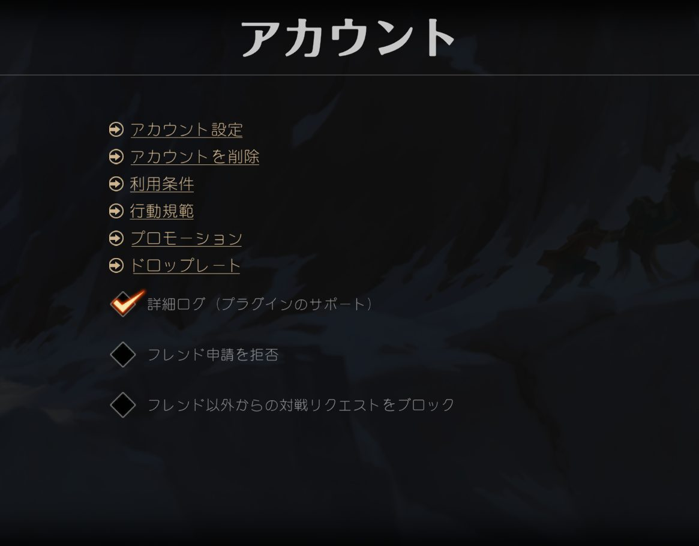

対応環境：Windows／MacのPCで、Google Chrome または Microsoft Edge。FirefoxとSafariは、ログファイルを読み続ける機能が無いため使えません。スマートフォン・タブレットでは利用できません（スマホ版アリーナはログを外部に公開しない作りのため）。
このブラウザでは動きません。PCのChromeまたはEdgeで開いてください。
準備（初回だけ）
- マジック：ザ・ギャザリング アリーナを起動し、右上の歯車から設定を開き、「アカウント」→「詳細ログ（プラグインのサポート）」にチェックを入れる
- アリーナを再起動する
- 下の「Player.log を選ぶ」を押すとファイル選択の画面が開くので、上部のアドレス欄に次を貼り付けてEnterを押し、開いたフォルダの中の Player.log を選ぶ
Windows：%USERPROFILE%\AppData\LocalLow\Wizards Of The Coast\MTGA
Mac：~/Library/Logs/Wizards Of The Coast/MTGA

ファイルはこのブラウザの中でだけ読み取ります。内容がどこかに送られることはありません。上のパスはユーザー名を打たなくても自分のフォルダに置き換わります。
設定
ピック済みの上位2色を自分の色とみなし、合うカードを持ち上げ、違うカードを下げます。標準では1パック目で最大±4、2パック目で±6、3パック目で±8ポイントです。
ピック済みのクリーチャー・タイプと、それを参照するカード（受け皿）の噛み合いを見て持ち上げます。標準では最大＋6ポイント、強めでは＋10ポイントほどになります。
環境の速さごとに「土地以外23枚のカーブ」の目安を持ち、いま足りていないマナ域を持ち上げます（最大±2ポイント）。旧方式は、デッキの中身に関係なくマナ域だけで一律に上げ下げします。
ログファイルを選ぶと監視を始めます。
ドラフトの開始を待っています
アリーナでドラフトのパックを開くと、ここにカードが並びます。
これまでのピック
まだありません。
読み取りの記録（うまく動かないときに）
ログから拾えた出来事を新しい順に出します。パックを開いたのにここに何も出ない場合は、アリーナ側のログ形式が変わった可能性があります。この内容を添えてお知らせください。